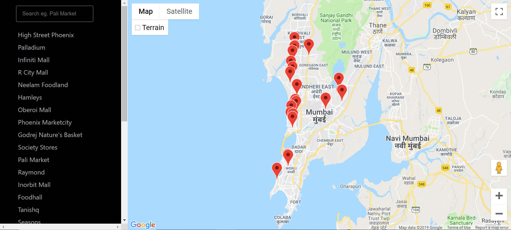
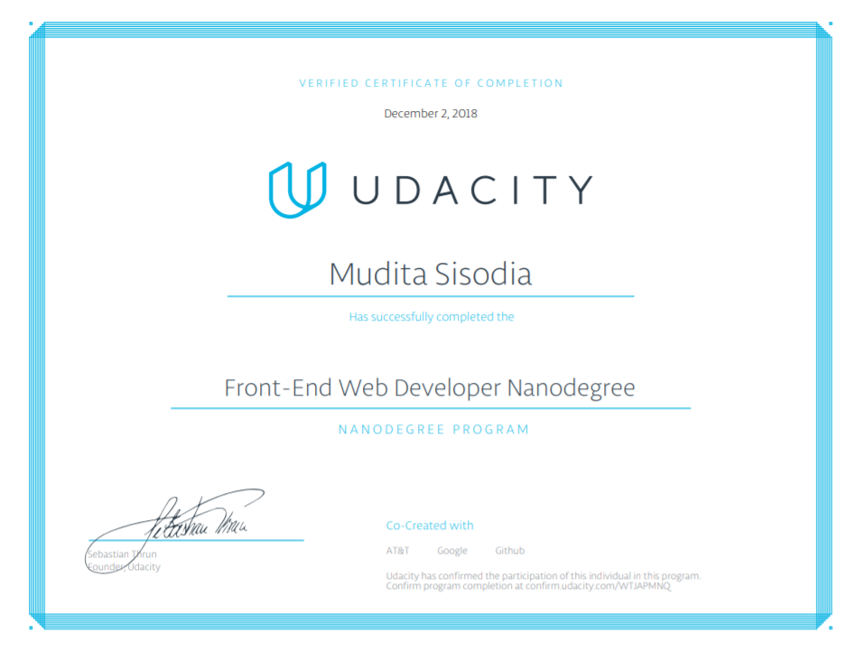

In my third year of college, I quit my extracurricular committees to focus on my technical skills. I did Oracle's Java certification, Microsoft's Database Fundamentals, dabbled in data science and did a Base SAS certification. But after being exposed to the Maker movement in 2016, I knew that I would only be satisfied when I'm making products that people could interact with directly and that would solve their real world problems. I knew that I needed a line of work which was both visually stimulating and logically driven.
Front-end web development checked these boxes. I would be able to see people interact my work, it would be visually satisfying and made by code. I realised that there was much more to it than plain HTML, CSS and JavaScript. I was eager to learn more.
Around that time, a friend of mine told me about Google's Udacity Frontend Web Developer Nanodegree Scholarship. It was an extensive 6 month online course that covered frontend development from basic HTML to frameworks like React. I applied for the scholarship and made it to the Challenge phase.
The challenge phase lasted 3 months and tested not just my intellect but also my dedication and ability to get out of my comfort zone. Since Udacity wanted to build an intercative community of developers, one of their selection criterias was a student's participation in the forum and Slack channel. I completed the provided course work with ease but I struggled to be interact with other students. As an introvert, this took the most out of me. But this would have been a sorry excuse for me to not get the scholarship so I pulled up my socks and made sure I did my bit.
I received the scholarship in May, 2018 while I was interning as a frontend developer at UnFound and completing my Fullstack Developer I Nanodegree.
Class began on 29 May and I started it as soon as I completed my ongoing nanodegree. We were required to complete 5 projects that covered responsive design, Javascript, testing, accessibilty, service workers and finally, ReactJS. The course also covered other frameworks, web tools and version control.
The most challenging project was the final React Project where we were tasked to create a map for our neighborhood highlighting places of interest using the Google Maps API. I started the project using a third party libraray to integrate the API with React but soon realised that implementing some of the project requirements was even more cumbersome with the library. So I scrapped 3 days of effort and restarted the project from scratch and completed it by coding the integration on my own. I had much more flexibility this way and realised the importance of keeping my code simple.
I completed the nanodegree in November, 2018.
